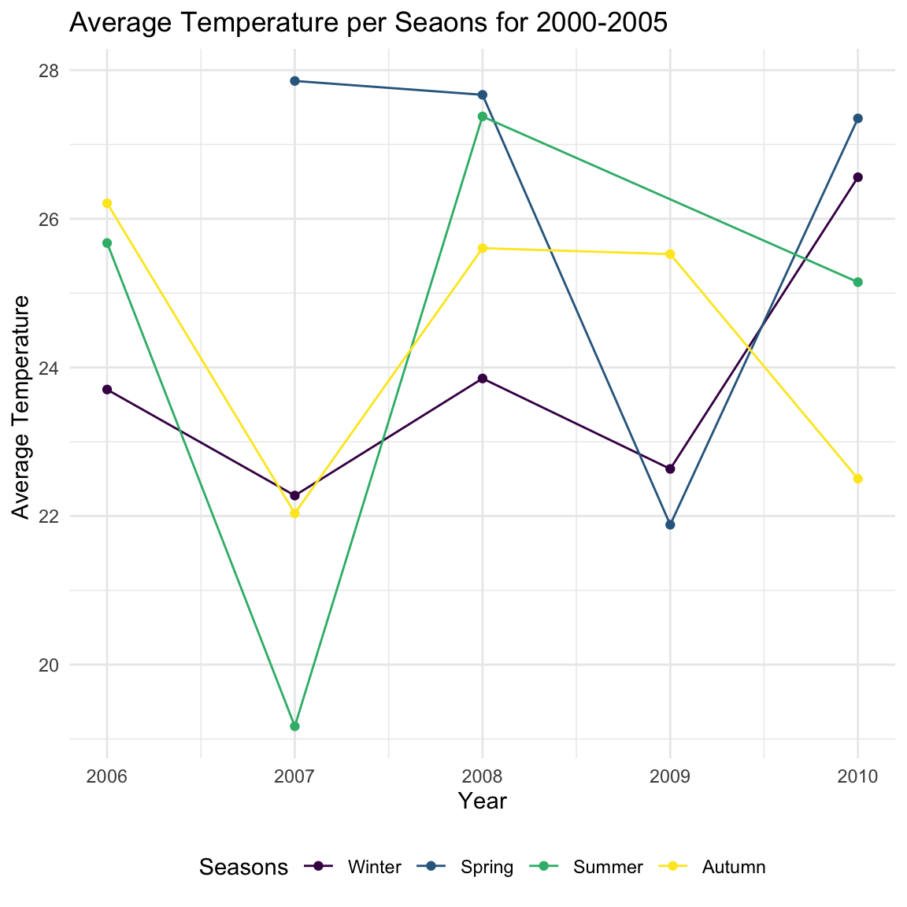

This is repackaged data from a newer compilation put together by the Berkeley Earth, which is affiliated with Lawrence Berkeley National Laboratory. The Berkeley Earth Surface Temperature Study combines 1.6 billion temperature reports from 16 pre-existing archives.
This data compiles the average temperature of 16 different countries from the years 1796 through 2013 with the corresponding Month and Day.
The raw data set can be accessed from the following link: http://berkeleyearth.org/archive/data/
The estimates of the total number of deaths from the World Health Organization (WHO) and Global Burden of Disease (GBD) pinpoint a rise in deaths from the time period of 1990-2017. Their reports highlight a rise in Malaria beginning in 1990, downward trends in 2005 and eventually a significant decrease in 2017.
The report and corresponding figures can be found through the following link: https://ourworldindata.org/malaria
outbreak_df_plot## Warning: `arrange_()` is deprecated as of dplyr 0.7.0.
## Please use `arrange()` instead.
## See vignette('programming') for more help
## This warning is displayed once every 8 hours.
## Call `lifecycle::last_warnings()` to see where this warning was generated.nonoutbreak_plotThe data set for Global Temperature Patterns per Country was further broken down to show temperature patterns based on seasons of the year.
Our data set describes countries mostly countries based on the African content.
Note:For many countries in Africa, the seasons do not follow the same pattern they do in New Zealand or Australia. Instead of Summer, Autumn, Winter and Spring, most countries in East Africa and Southern Africa have a wet season(s) and a dry season.
outbreakseasons_plot nonoutbreakseasons_plot